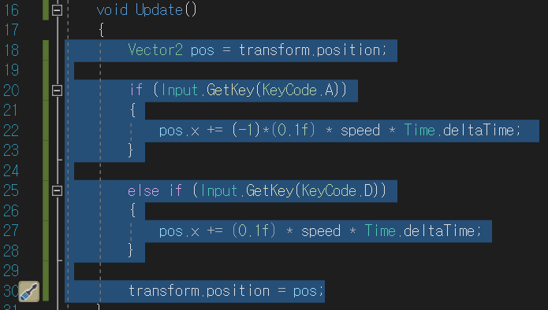
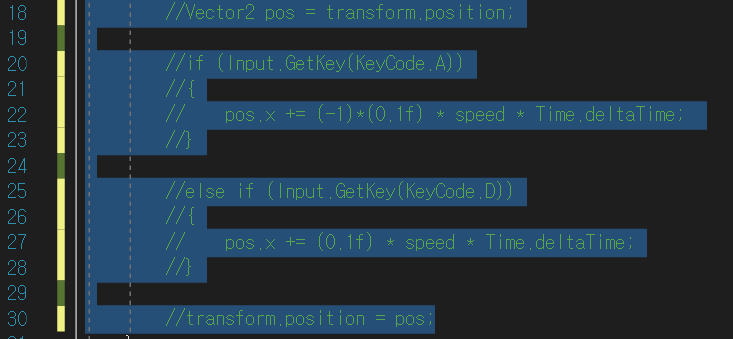
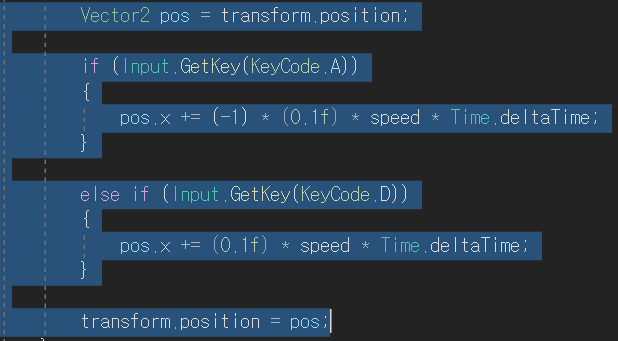

주석의 종류는 프로그래밍 언어마다 다르지만, 대체로 여러 줄 주석 (/* */) 혹은 한줄 주석 (//) 으로 나누어져 있습니다.
대체로 여러 줄 주석 (/* */) 보다 한줄 주석 (//) 을 자주 이용하는데, 드래그한 코드를 한 번에 한줄 주석 처리하는 단축키에 대해서 정리 하도록 하겠습니다.
#드래그한 영역 모두 한줄 주석 처리하기 : Ctrl + K + C
주석처리 할 코드를 드래그한 후에 Ctrl + K + C 를 누릅니다.

그럼 아래와 같이 드래그한 영역의 코드가 모두 한 줄 주석 처리가 됩니다.

#드래그한 영역 모두 주석 제거하기 : Ctrl + K + U
주석처리를 삭제할 영역을 드래그 한 후에 Ctrl + K + U 를 누릅니다.

그럼 다음과 같이 주석이 모두 삭제됩니다.
